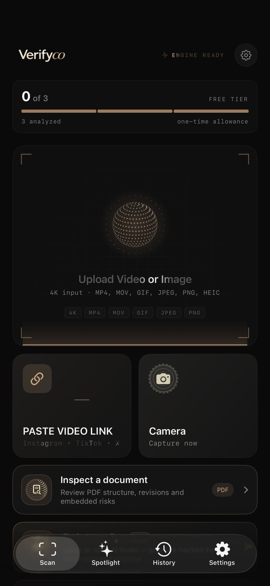
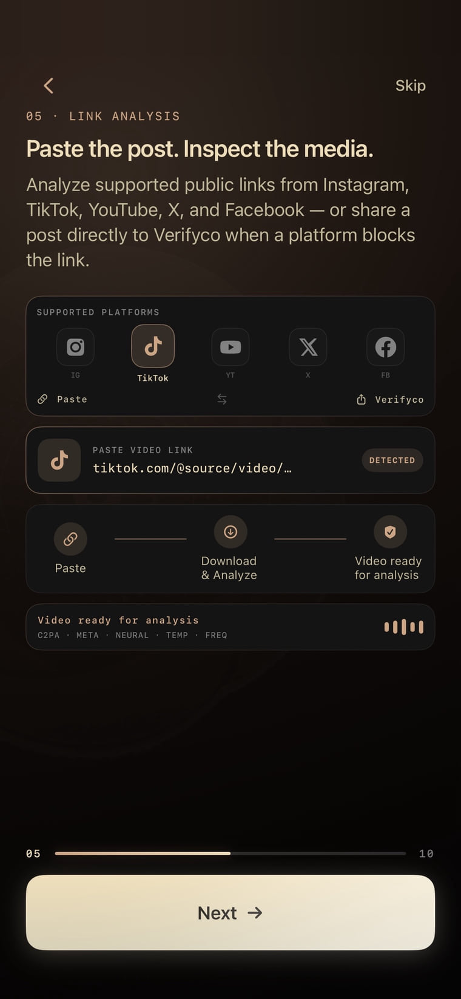
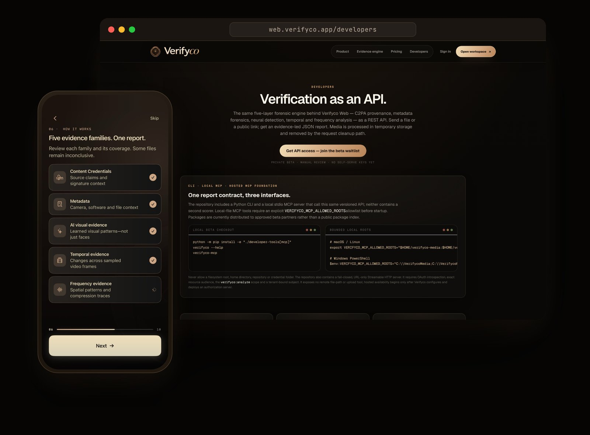

People can no longer tell.
In a peer-reviewed study, people picked out AI-generated faces at a rate below a coin flip. Looking harder does not help.
Know what can actually be shown about a photo, video, public link or document. On iPhone in 20 languages and on the web, honest when the answer is “inconclusive”.
In a peer-reviewed study, people picked out AI-generated faces at a rate below a coin flip. Looking harder does not help.
One real-or-fake score rarely shows which checks ran or how certain the system is. On real social-media content, published detectors lose much of their lab performance.
A wrong “fake” is a false accusation; a wrong “real” is a fraud. Generative-AI-enabled fraud losses in the US are projected to reach US$40 billion by 2027.
Sources: Nightingale & Farid, PNAS 2022 · Reuters Institute Digital News Report 2025 · independent in-the-wild detector benchmarks, 2025 · Deloitte Center for Financial Services, 2024
Signed media is arriving; someone has to read it. Camera makers and AI labs now stamp content with provenance signals, and regulators require labelling. Yet each verifier reads only its own mark. Verifyco brings together the evidence it can read, signed and unsigned, and explains what can be shown.
Content Credentials (C2PA) and, with consent, supported AI-provider signals, plus its own forensic analysis of signed and unsigned media, explained in the user's language.
Platform trust-and-safety teams facing short takedown windows; newsrooms labelling AI content as deployers; fact-checkers working under the EU Digital Services Act election guidelines.



Screens: current build. Files you pick on your iPhone are analysed on the device unless the optional, off-by-default OpenAI provenance check is switched on; public links and web uploads are processed temporarily on our servers.

No single family decides alone. When the evidence is thin, the answer stays inconclusive. One written contract says what counts as evidence, what may decide, and what we say when we do not know. The same rules apply on iPhone and on the web.
Inconclusive results say which way they lean. “Authentic” needs capture evidence: valid Content Credentials, an in-app capture or an intact camera original. A visual score alone never can.
Capabilities are described at the level of outcomes. Mechanisms are not disclosed.

Coverage and uncertainty on every check, not one opaque score.
On-device on iPhone, server-side for web, CLI and API: the same rules everywhere.
The same engine serves a person with one photo and a desk with a queue.
Content Credentials today; supported provider signals with consent. Own-mark verifiers read only their own mark.
Yusuf Eser, Founder & CEO. Istanbul, Türkiye.
One email. We reply with the current deck, a demo link and the numbers we share in private.